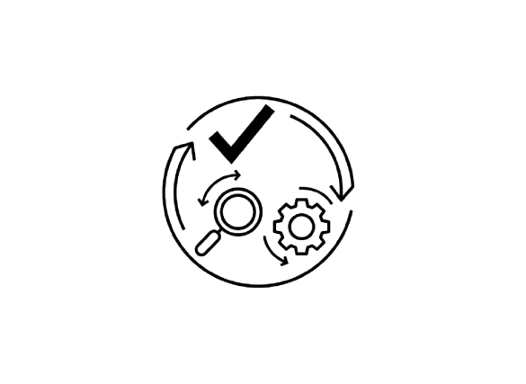
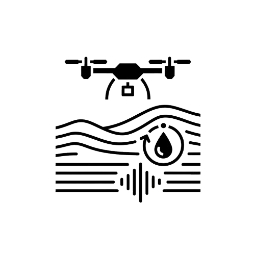
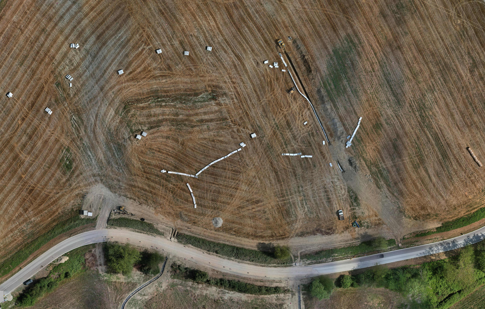
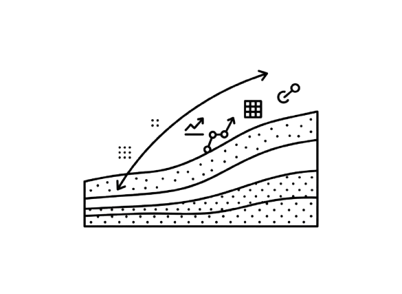
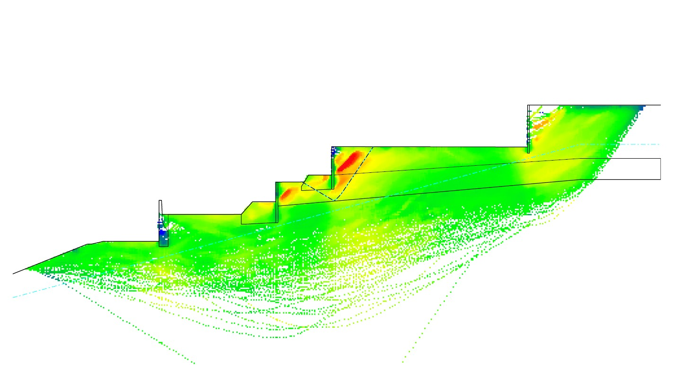
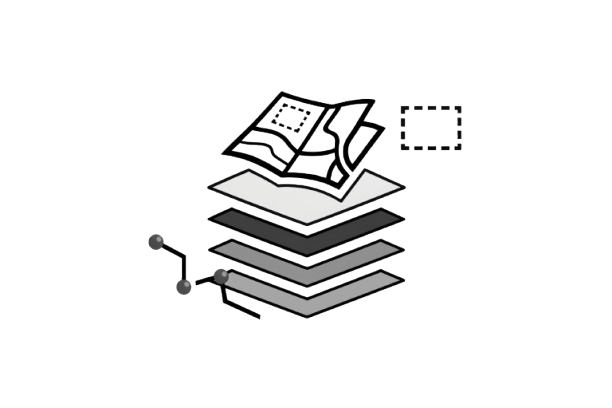
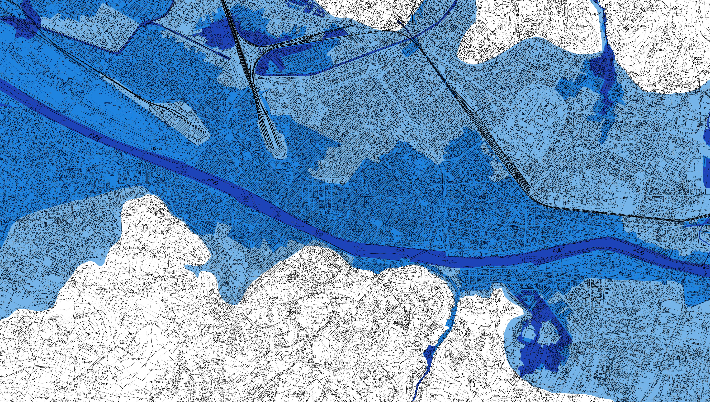
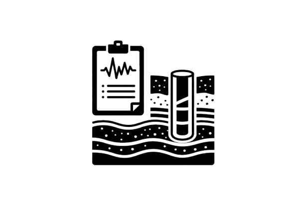
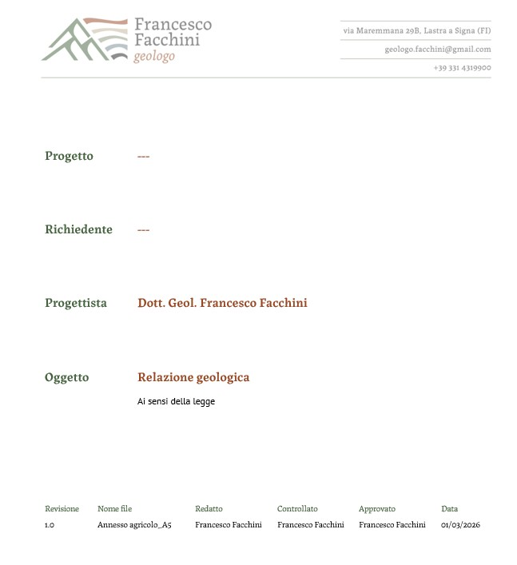
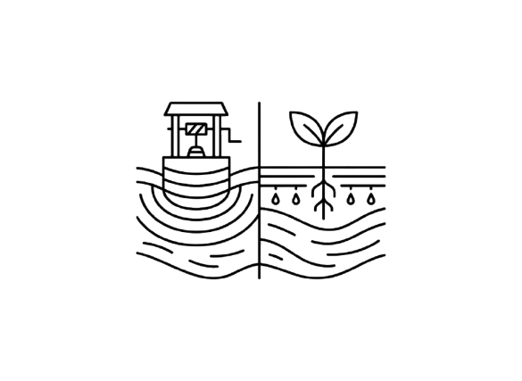

Il MetodoL'approccio adottato integra rilievi diretti, analisi dei dati e strumenti digitali, con l'obiettivo di:
- ridurre le incertezze progettuali
- prevenire criticità in fase esecutiva
- ottimizzare le soluzioni tecniche
.jpg)
.jpg)
.jpg)
Sono un geologo libero professionista con esperienza nella redazione di studi geologici, geotecnici e sismici a supporto della progettazione. Dopo la laurea magistrale in Scienze e Tecnologie Geologiche e l’abilitazione alla professione nel 2020, svolgo attività di consulenza collaborando con studi tecnici e professionisti del settore. Il mio lavoro si basa sull’integrazione tra indagini in sito, analisi dei dati e modellazione, con l’obiettivo di fornire un quadro affidabile delle condizioni del sottosuolo e supportare decisioni progettuali consapevoli.
Scarica il Curriculum
Il MetodoL'approccio adottato integra rilievi diretti, analisi dei dati e strumenti digitali, con l'obiettivo di:

Rilievi e indaginiRilievi topografici con drone, sopralluoghi, prove sismiche e attività di monitoraggio ambientale su suolo, acqua e aria.


Analisi e modellazioneAnalisi di stabilità dei versanti e modellazioni geotecniche, con utilizzo di software specialistici e interpretazione dei dati di indagine.


Cartografia e supporto GIS


Studi Geologici e GeotecniciRedazioni di relazioni geologiche, geotecniche e sismiche per interventi edilizi e infrasturtturali, in conformità alle normative vigenti.


Pozzi e sistemi di subirrigazioneprogettazione e supporto alla realizzazione di pozzi e sistemi di subirrigazione, sulla base di valutazione idrogeologiche e della compatibilità con il contesto locale.